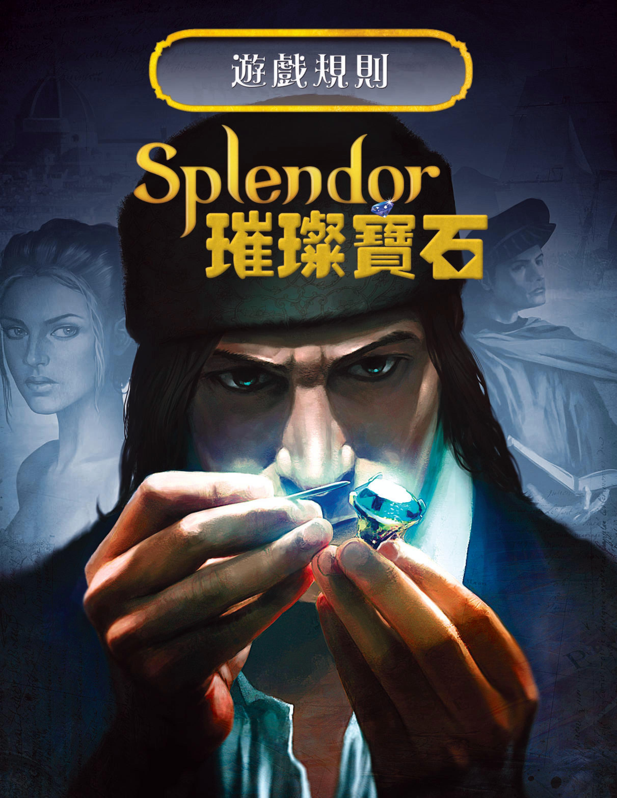
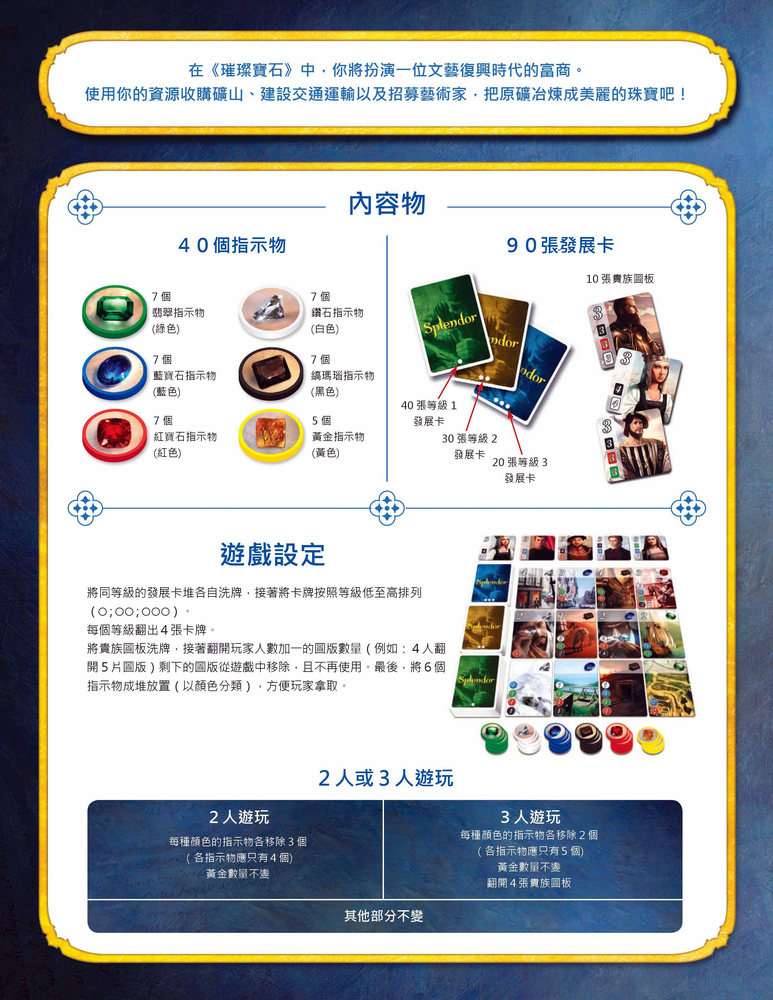
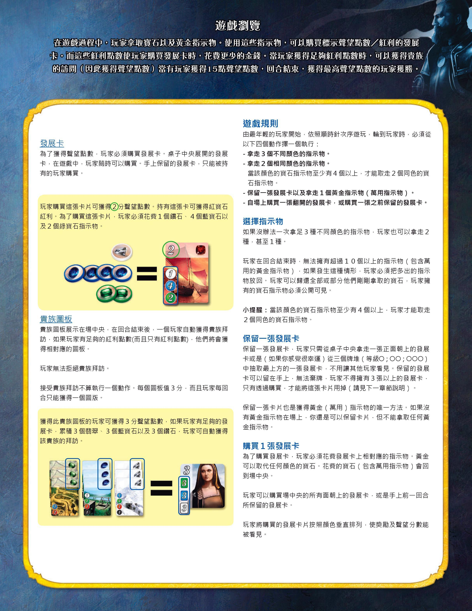
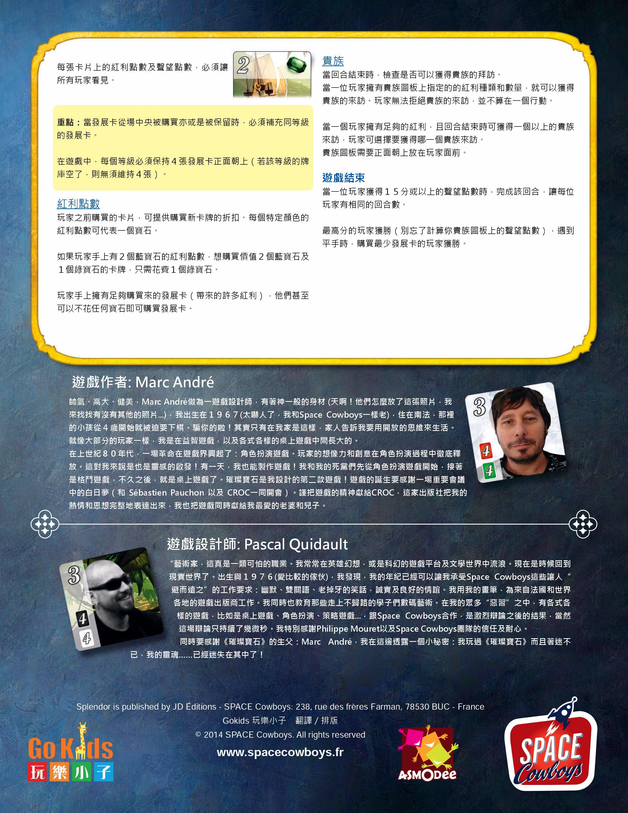

本页整理自集石《璀璨宝石》词条所载《璀璨寶石》(Splendor,Marc André 设计,SPACE Cowboys 出版,Gokids 玩樂小子翻譯排版)官方中文规则书扫描件(2018-11-23 发布,4 图),逐页全文转录,原书扫描图随文嵌入——点击任意图片即可放大查看。规则内容归 Marc André、SPACE Cowboys、Gokids 及版权方所有,转录仅供个人学习查阅。
整理说明:原书为繁体印制,照录、未作繁简转换。原书用字与排印照录:「圖板/圖版」混用、「指定的的紅利種類」衍一「的」字、「來說是也是靈感的啟發」衍一「是」字、「出生與 1976」(不用「於」)、「一顆可怕的職業」、「6 個指示物成堆放置」等;第一页为封面(美术字卡名「璀璨寶石」为繁体)。宝石译名对照:翡翠(綠)、鑽石(白)、藍寶石(藍)、縞瑪瑙(黑)、紅寶石(紅)、黃金(黃,萬用)。


在《璀璨寶石》中,你將扮演一位文藝復興時代的富商。使用你的資源收購礦山、建設交通運輸以及招募藝術家,把原礦冶煉成美麗的珠寶吧!
7 個翡翠指示物(綠色)
7 個鑽石指示物(白色)
7 個藍寶石指示物(藍色)
7 個縞瑪瑙指示物(黑色)
7 個紅寶石指示物(紅色)
5 個黃金指示物(黃色)
40 張等級 1 發展卡
30 張等級 2 發展卡
20 張等級 3 發展卡
10 張貴族圖板
將同等級的發展卡堆各自洗牌,接著將卡牌按照等級低至高排列(○;○○;○○○)。
每個等級翻出 4 張卡牌。
將貴族圖板洗牌,接著翻開玩家人數加一的圖板數量(例如:4 人翻開 5 片圖版)剩下的圖版從遊戲中移除,且不再使用。最後,將 6 個指示物成堆放置(以顏色分類),方便玩家拿取。
2 人遊玩:每種顏色的指示物各移除 3 個(各指示物應只有 4 個);黃金數量不變。
3 人遊玩:每種顏色的指示物各移除 2 個(各指示物應只有 5 個);黃金數量不變;翻開 4 張貴族圖板。
其他部分不變。

在遊戲過程中,玩家拿取寶石以及黃金指示物。使用這些指示物,可以購買標示聲望點數/紅利的發展卡。而這些紅利點數使玩家購買發展卡時,花費更少的金錢。當玩家獲得足夠紅利點數時,可以獲得貴族的訪問(因此獲得聲望點數)當有玩家獲得 15 點聲望點數,回合結束,獲得最高聲望點數的玩家獲勝。
為了獲得聲望點數,玩家必須購買發展卡。桌子中央展開的發展卡,在遊戲中,玩家隨時可以購買。手上保留的發展卡,只能被持有的玩家購買。
〔范例〕玩家購買這張卡片可獲得②分聲望點數。持有這張卡可獲得紅寶石紅利。為了購買這張卡片,玩家必須花費 1 個鑽石、4 個藍寶石以及 2 個綠寶石指示物。
貴族圖板展示在場中央,在回合結束後,一個玩家自動獲得貴族拜訪。如果玩家有足夠的紅利點數(而且只有紅利點數),他們將會獲得相對應的圖板。
玩家無法拒絕貴族拜訪。
接受貴族拜訪不算執行一個動作。每個圖板值 3 分,而且玩家每回合只能獲得一個圖版。
〔范例〕獲得此貴族圖板的玩家可獲得 3 分聲望點數。如果玩家有足夠的發展卡,累積 3 個翡翠、3 個藍寶石以及 3 個鑽石,玩家可自動獲得該貴族的拜訪。
由最年輕的玩家開始,依照順時針次序遊玩。輪到玩家時,必須從以下四個動作擇一個執行:
— 拿走 3 個不同顏色的指示物。
— 拿走 2 個相同顏色的指示物。當該顏色的寶石指示物至少有 4 個以上,才能取走 2 個同色的寶石指示物。
— 保留一張發展卡以及拿走 1 個黃金指示物(萬用指示物)。
— 自場上購買一張翻開的發展卡,或購買一張之前保留的發展卡。
如果沒辦法一次拿足 3 種不同顏色的指示物,玩家也可以拿走 2 種,甚至 1 種。
玩家在回合結束時,無法擁有超過 10 個以上的指示物(包含萬用的黃金指示物)。如果發生這種情形,玩家必須把多出的指示物放回。玩家可以歸還全部或部分他們剛剛拿取的寶石,玩家擁有的寶石指示物必須公開可見。
小提醒:當該顏色的寶石指示物至少有 4 個以上,玩家才能取走 2 個同色的寶石指示物。
保留一張發展卡,玩家只需從桌子中央拿走一張正面朝上的發展卡或是(如果你感覺很幸運)從三個牌堆(等級○;○○;○○○)中抽取最上方的一張發展卡,不用讓其他玩家看見。保留的發展卡可以留在手上,無法棄牌,玩家不得擁有 3 張以上的發展卡,只有透過購買,才能將這張卡片用掉(請見下一章節說明)。
保留一張卡片也是獲得黃金(萬用)指示物的唯一方法。如果沒有黃金指示物在場上,你還是可以保留卡片,但不能拿取任何黃金指示物。
為了購買發展卡,玩家必須花費發展卡上相對應的指示物。黃金可以取代任何顏色的寶石。花費的寶石(包含萬用指示物)會回到場中央。
玩家可以購買場中央的所有面朝上的發展卡,或是手上前一回合所保留的發展卡。
玩家將購買的發展卡片按照顏色垂直排列,使獎勵及聲望分數能被看見。

每張卡片上的紅利點數及聲望點數,必須讓所有玩家看見。
重點:當發展卡從場中央被購買亦或是被保留時,必須補充同等級的發展卡。
在遊戲中,每個等級必須保持 4 張發展卡正面朝上(若該等級的牌庫空了,則無須維持 4 張)。
玩家之前購買的卡片,可提供購買新卡牌的折扣。每個特定顏色的紅利點數可代表一個寶石。
如果玩家手上有 2 個藍寶石的紅利點數,想購買價值 2 個藍寶石及 1 個綠寶石的卡片,只需花費 1 個綠寶石。
玩家手上擁有足夠購買來的發展卡(帶來的許多紅利),他們甚至可以不花任何寶石即可購買發展卡。
當回合結束時,檢查是否可以獲得貴族的拜訪。
當一位玩家擁有貴族圖板上指定的的紅利種類和數量,就可以獲得貴族的來訪。玩家無法拒絕貴族的來訪,並不算在一個行動。
當一個玩家擁有足夠的紅利,且回合結束時可獲得一個以上的貴族來訪,玩家可選擇要獲得哪一個貴族來訪。
貴族圖板需要正面朝上放在玩家面前。
當一位玩家獲得 15 分或以上的聲望點數時,完成該回合,讓每位玩家有相同的回合數。
最高分的玩家獲勝(別忘了計算你貴族圖板上的聲望點數),遇到平手時,購買最少發展卡的玩家獲勝。
帥氣、高大、健美,Marc André做為一遊戲設計師,有著神一般的身材(天啊!他們怎麼放了這張照片,我來找找有沒有其他的照片...),我出生在 1967(太嚇人了,我和Space Cowboys一樣老),住在南法,那裡的小孩從 4 歲開始就被迫要下棋。騙你的啦!其實只有在我家是這樣,家人告訴我要用開放的思維來生活。就像大部分的玩家一樣,我是在益智遊戲,以及各式各樣的桌上遊戲中間長大的。
在上世紀 80 年代,一場革命在遊戲界興起了:角色扮演遊戲。玩家的想像力和創意在角色扮演過程中徹底釋放。這對我來說是也是靈感的啟發!有一天,我也能製作遊戲!我和我的死黨們先從角色扮演遊戲開始,接著是格鬥遊戲,不久之後,就是桌上遊戲了。璀璨寶石是我設計的第二款遊戲!遊戲的誕生要感謝一場重要會議中的白日夢(和 Sébastien Pauchon 以及 CROC一同開會)。謹把遊戲的精神獻給CROC,這家出版社把我的熱情和思想完整地表達出來,我也把遊戲同時獻給我最愛的老婆和兒子。
"藝術家,這真是一顆可怕的職業。我常常在英雄幻想,或是科幻的遊戲平台及文學世界中流浪。現在是時候回到現實世界了。出生與 1976(愛比較的傢伙),我發現,我的年紀已經可以讓我承受Space Cowboys這些讓人"避而遠之"的工作要求:幽默、雙關語、老掉牙的笑話,誠實及良好的情誼。我用我的畫筆,為來自法國和世界各地的遊戲出版商工作。我同時也教育那些走上不歸路的學子們數碼藝術。在我的眾多"惡習"之中,有各式各樣的遊戲,比如是桌上遊戲、角色扮演、策略遊戲...,跟Space Cowboys合作,是激烈辯論之後的結果,當然這場辯論只持續了幾微秒。我特別感謝Philippe Mouret以及Space Cowboys團隊的信任及耐心。
同時要感謝《璀璨寶石》的生父:Marc André,我在這邊透露一個小秘密:我玩過《璀璨寶石》而且著迷不已,我的靈魂......已經迷失在其中了!
〔版權頁〕Splendor is published by JD Éditions / SPACE Cowboys: 238, rue des frères Farman, 78530 BUC - France / Gokids 玩樂小子 翻譯/排版 / © 2014 SPACE Cowboys. All rights reserved. / www.spacecowboys.fr